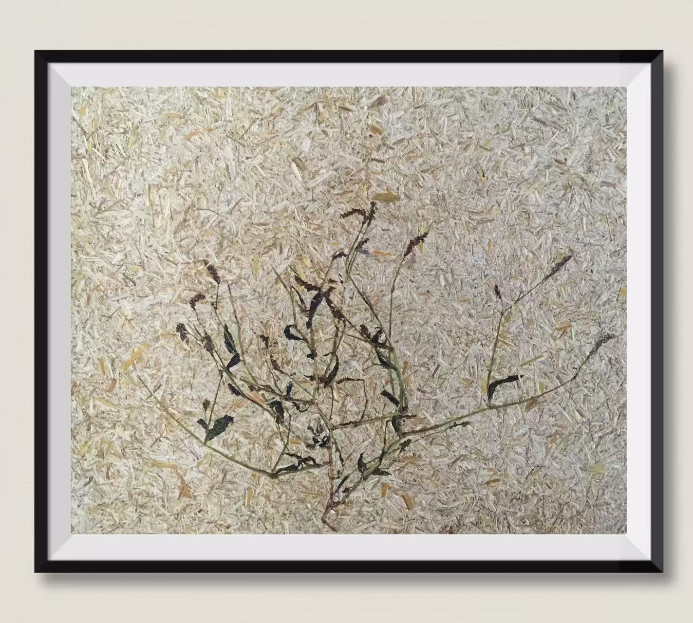
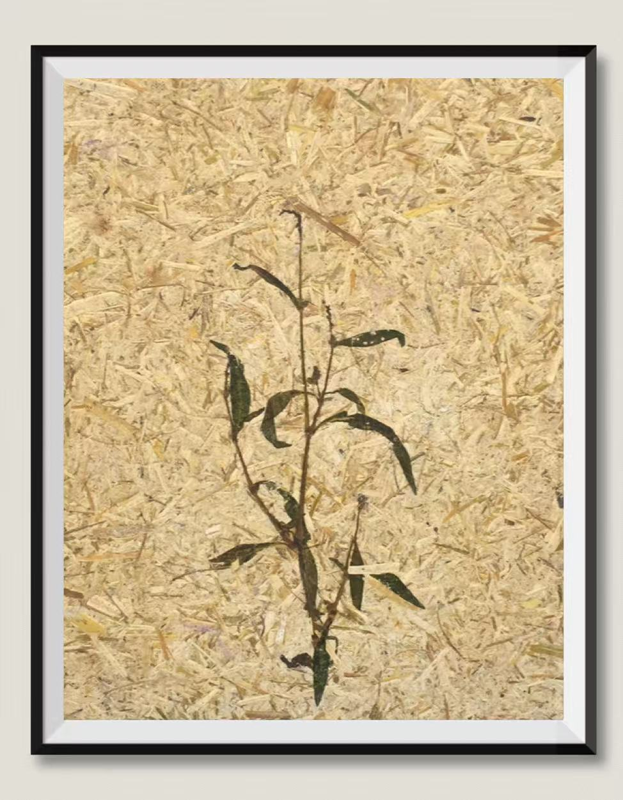
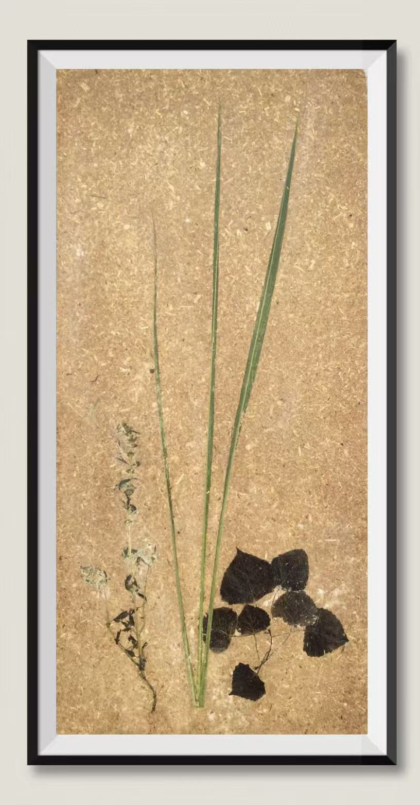
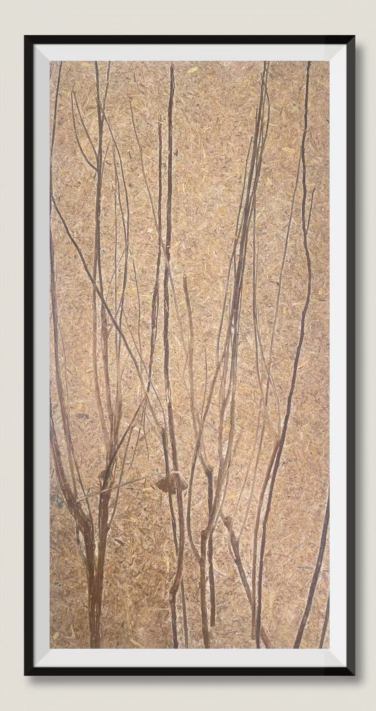
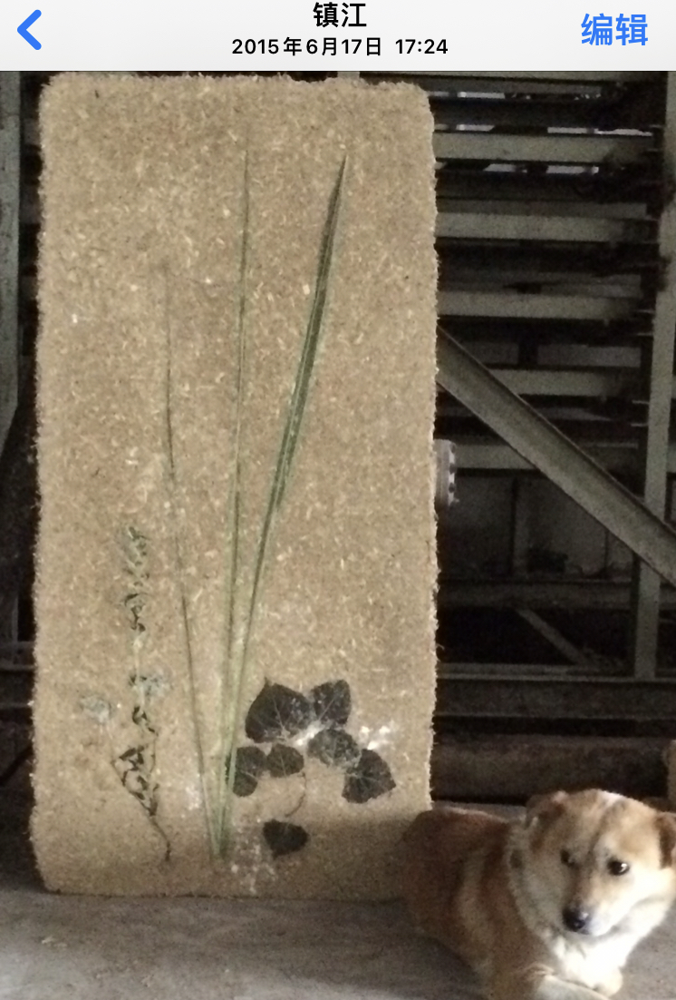
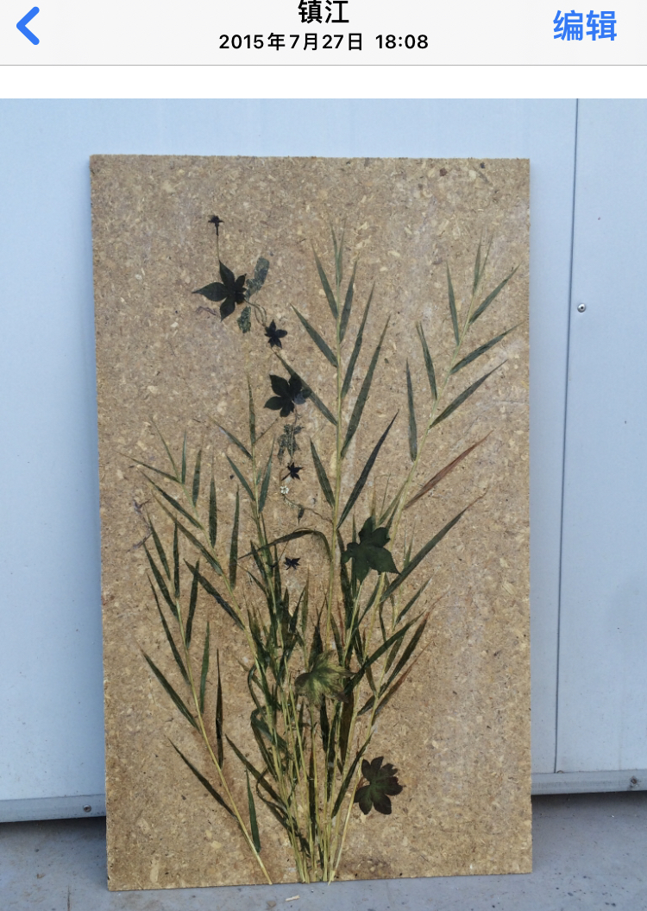
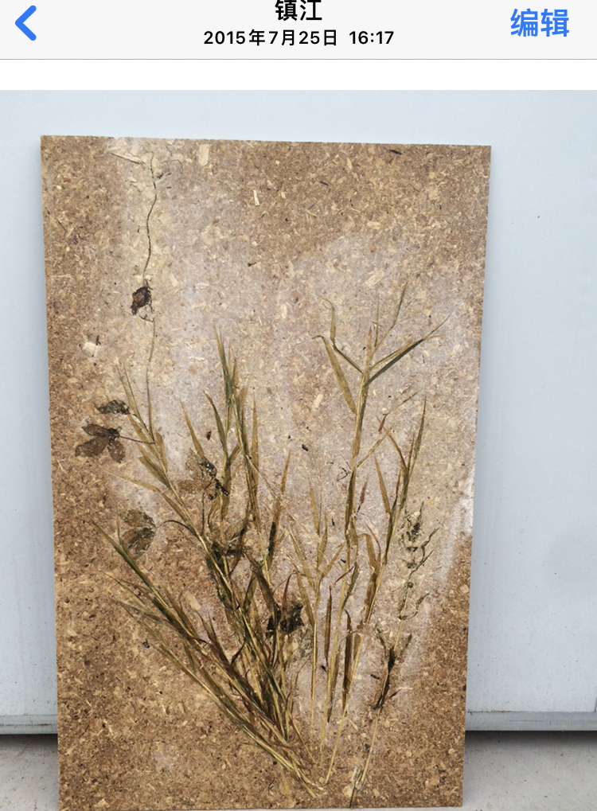
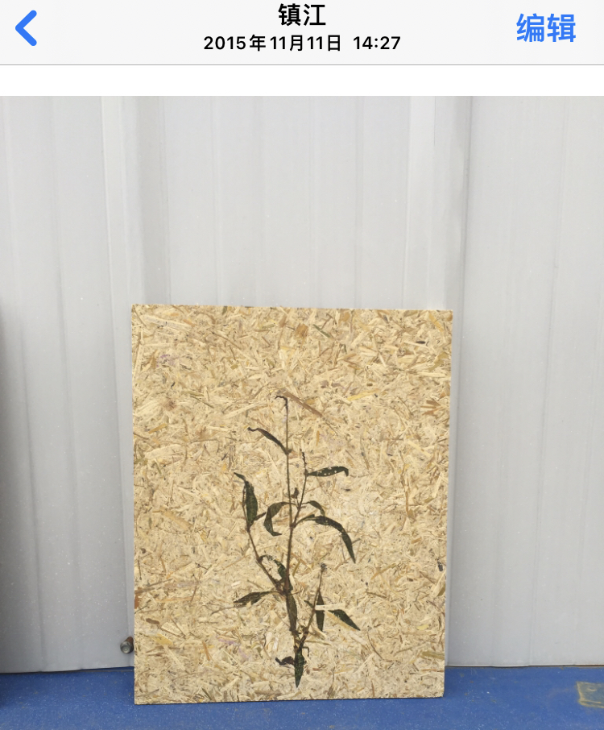
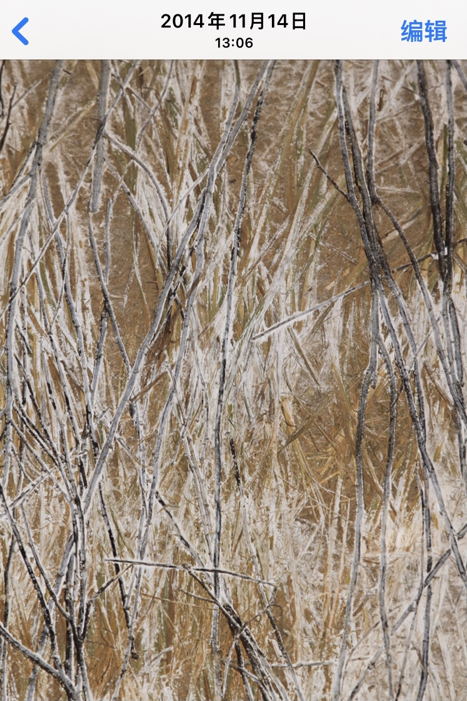
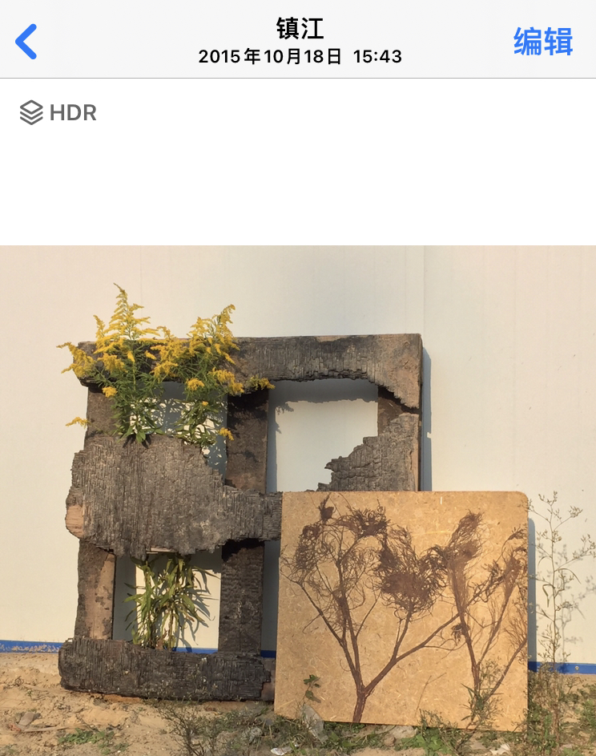

Since 2014, while developing environmental protection technologies, the technology developer has also created these works using straw and other solid waste. The aim is to enable impoverished people to create artworks from nearby waste materials, thereby improving their lives. This technology has already obtained a patent certificate.
Row 1



Row 2





Others







